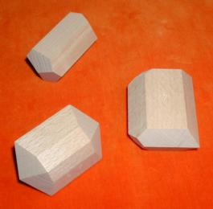

This note was sent in response to my request for information on teaching
materials for crystallography. The Author teaches in Spain. he writes:
I planned a set of wooden models which have been made by our carpeneter
under my supervision. We have used them mainly for teaching in our
Crystallography practical classes, at the Faculty of Geology in Oviedo.

The carpenter is able to offer for sale sets of such models, containing
54 numbered wooden (beech) models (around 8 cm in mean size) in a wooden box,
with an explantory booklet. The
booklet describes each model by number,
crystal system, point group and crystal class of symmetry,
Miller index of form(s),
stereogram and a drawing obtained with the
SHAPE program of Eric Dowty.
The models present symmetries of the 32 crystallographic point groups, some point groups having more than one single model. 33 models represent mineral habits, such as ortoclase, hornblende, struvite, gypsum, topaz, corundum, cleavage rombohedron of calcite, pyrite, benitoite, pharmacosiderite, apatite, and others. The majority of models are combined forms while some difficult forms such as rhombic or tetragonal disphenoids are single crystal forms.
The A4 sized booklet is available in Spanish, or English, Click here to see the front cover with a few more diagrams.
The price for one set is 40.000 pesetas VAT and transport charges not included. Orders should be directed to him.
You may wish to use the Order Form provided, especially if your Spanish is not very good.
The carpenter is:
Mr. Faustino Martinez
with postal address
Alvaro Florez Estrada, 2 - 9º
33006 Oviedo, Spain
If you want more details please ask me:
Damaso B. Moreiras-Blanco
moreiras@asturias.geol.uniovi.es
Page added 3 Oct 1995
The price in pesetas is 45.000, about 271 euros.
Fast shipping to the USA is about 21.700 pesetas, about 130 euros.
 Click here to return to BCA homepage
Click here to return to BCA homepage
{kind=link}
{kind=link}